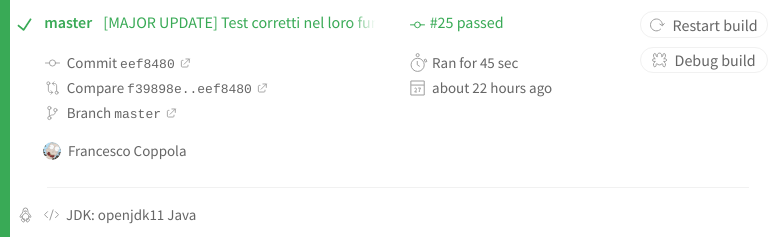

Introduzione¶
Il progetto è stato indirizzato ad all’implementazione tramite linguaggio Java del gioco da tavolo Mastermind 1.
Nell’ideare la struttura del progetto si è puntato alla massima modularità possibile, per quanto non totale, ottenuta tramite l’applicazione di determinati design pattern.
Architettura fondamentale del progetto¶
L’avvio del programma è delegato ad una classe che estende MainManager, classe astratta contenente il funzionamento effettivo e a più alto livello del programma.
La particolare estensione di tale classe è delegata a definire quali implementazioni delle classi GameViewFactory e StartView si è scelto di impiegare.
Le classi GameViewFactory e StartView sono fondamentali in quanto estendibili con classi mirate a fornire delle viste finalizzate all’interazione con gli utenti fisici.
Il funzionamento di MainManager si basa sulla creazione, esecuzione e monitoraggio di istanze personalizzate di SingleMatch, rappresentanti singole partite di gioco.
La corrente implementazione di MainManager consente la gestione di una singola istanza di SingleMatch alla volta.
All’interno dell’esecuzione effettiva del metodo di avvio presente in SingleMatch si ha poi l’interazione di due entità rappresentanti i giocatori, rispettivamente
un CodeMaker (colui che definisce la sequenza di ColorPegs da indovinare) e un CodeBreaker (colui che definisce sequenze di ColorPegs valide come tentativi),
con l’entità BoardController, attraverso la quale viene aggiornata un’istanza di BoardModel (rappresentante una plancia di gioco).
Lo svolgimento di un SingleMatch si conclude quando si è arrivati ad una delle tre condizioni di vittoria, rappresentate dalla sconfitta del CodeBreaker a causa di una sua resa
o per l’esaurimento dei tentativi disponibili e dalla sconfitta del CodeMaker a causa della definizione di una corretta sequenza tentativa da parte del CodeBreaker.
L’interazione con l’utente fisico all’interno del programma è svolta da istanze estensione di StartView (mirate alla fase di preparazione dei singoli match) e da
istanze estensione di GameView (mirate alla gestione delle azioni da eseguire durante i match).
Estendibilità ed implementazioni fornite di default¶
L’estendibilità del progetto si sostanzia nella possibilità di definire nuove implementazioni per le seguenti responsabilità:
Gestione dell’avvio e del monitoraggio delle singole partite, rappresentata da
MainManager.Gestione dell’interazione con l’utente fisico per l’avvio di nuove partite, rappresentata da
StartView.Gestione dell’interazione con l’utente fisico per la gestione delle azioni all’interno di singole partite, rappresentata da
GameView.Fornire istanze di implementazioni di GameView, rapprsentata da
GameViewFactory.Rappresentazione di un giocatore che decide la sequenza da indovinare, rappresentata da
CodeMaker.Fornire istanze di implementazioni di CodeMaker, rappresentata da
MakerFactory.Rappresentazione di un giocatore che cerca di indovinare la sequenza, rappresentata da
CodeBreaker.Fornire istanze di implementazioni di CodeBreaker, rappresentata da
BreakerFactory.
Esempi di implementazioni già incluse nella release attuale del progetto sono:
ConsoleMainManager, ad estensione di
MainManager.ConsoleStartView, implementazione di
StartView.ConsoleGameView, estensione di
GameView.ConsoleGameViewFactory, implementazione di
GameViewFactory.InteractiveMaker, RandomBotMaker, estensioni di
CodeMaker.InteractiveMakerFactory, RandomBotMakerFactory, implementazioni di
MakerFactory.InteractiveBreaker, RandomBotBreaker, DonaldKnuthBreaker, estensioni di
CodeBreaker.InteractiveBreakerFactory, RandomBotBreakerFactory, DonaldKnuthBreakerFactory, estensioni di
BreakerFactory.
Per ulteriori informazioni circa le classi elencate si rimanda alle relative sezioni.
Informazioni fondamentali circa il primo avvio¶
Il caricamento a runtime delle informazioni relative alle classi factory, grazie alle quali ottenere istanze di classi che estendono
CodeBreaker e CodeMaker, è stato reso possibile grazie alla definizione di classi implementazione PlayerFactoryRegistry, classi le cui istanze sono indirizzate
alla lettura a runtime di file di input e al caricamento di istanze di BreakerFactory e MakerFactory.
Il formato delle informazioni di tali file di input è molto importante ed in loro assenza ne vengono generati automaticamente altri
(all’interno della cartella GameResources) contenenti le istruzioni necessarie per un corretto avvio del programma.
Il caricamento a runtime di tali informazioni permette l’aggiunta di nuove funzionalità del programma, nei limiti di estendibilità già trattati, senza avere la
necessità di ricompilare tutte le classi del progetto.
Si rimanda alle sezioni per ulteriori informazioni circa le implementazioni di PlayerFactoryRegistry fornite.
Responsabilità delle classi¶
Si rimanda alle sezioni riguardanti le implementazioni delle singole classi per ulteriori informazioni.
Design pattern impiegati¶
1. Model View Controller 2
Rappresenta la struttura alla base del funzionamento delle singole partite.
È stata implementata tramite le classi GameView, BoardModel e BoardCoordinator, classi le cui istanze comunicano all’interno di SingleMatch.
2. Observer 3
Implementato fornendo come classe da osservare BoardModel e come classi che osservano GameView e MatchState, classi estensione di BoardObserver.
Dalla versione 9 di Java l’interfaccia Observer, pensata nell’ottica di questo design pattern, risulta deprecata.
La sua implementazione all’interno di questo progetto è quindi da vedere in un’ottica puramente accademica e finalizzata all’apprendimento del concetto alla base del pattern.
3. Singleton 4
Presente all’interno della classe ConsoleStartView, esso garantisce che siano presenti singole istanze di tali classe all’interno del progetto.
4. Factory 5
Implementato tramite le classi PlayerFactory, MakerFactory, BreakerFactory e le loro implementazioni per poter fornire istanze di giocatori CodeMaker e CodeBreaker.
Lo stesso pattern è stato inoltre implementato con GameViewFactory per poter fornire istanze di GameView all’inizializzazione dei vari SingleMatch.
Testing¶
Sono stati ideati dei test, scritti sotto ambiente JUnit 5 6, per poter testare in modo mirato le singole funzionalità del progetto.
Per ulteriori informazioni si rimanda alle sezioni riguardanti le implementazioni di tali test.
Gradle¶
Nell’ottica di garantire continuità al progetto si è deciso anche di implementare il tool di building Gradle 7, in versione 5.4.1, per facilitare il deploy e la distribuzione di tale software all’interno di altri sistemi.
Continuous Integration¶
La Continuous Integration, proprio come la Continuous Delivery, viene apprezzata soprattutto nello sviluppo agile di software. L’obiettivo di questo moderno metodo è quello di suddividere il lavoro in porzioni più piccole per rendere il processo stesso di sviluppo più efficiente e poter reagire con maggiore flessibilità alle modifiche. La Continuous Integration è stata nominata per la prima volta nella descrizione della metodologia agile Extreme Programming di Kent Beck.
Mediante l’implementazione di Gradle, illustrata in precedenza, si è riuscito a integrare all’interno della natura del progetto anche il software Travis CI 8.
Quest’ultimo garantisce all’intero progetto la possibilità di sviluppare una integrazione continua all’interno di un team di lavoro in primo luogo, e di consegunza, una seria di vantaggi non indifferenti, quali:
- Resa del build auto-testante
Ogni volta che il codice sorgente viene buildato ed impacchettato vengono eseguiti dei test sul sorgente affinché la qualità del codice venga tenuta sotto controllo ed eventuali bug vengano scoperti il prima possibile.
- Ogni commit lancia una build
Ogni modifica al codice sorgente condiviso potrebbe generare dei bug e quindi compilare e testare subito dà la possibilità di intervenire immediatamente su eventuali falle del sistema.
- Esecuzione di test in un clone dell’ambiente di produzione
L’ambiente di lavoro può differire in base all’OS adottato e dal hardware stesso della macchina che si adopera, per questo è fondamentale creare un clone del workspace che sia il medesimo per tutti i membri del progetto e incontro a tale evenienza viene in aiuto Docker.
- Repository del codice sorgente
Questo elemento è propedeutico a tutti gli altri principi descritti in precedenza, poichè senza avere un repository del codice è impossibile automatizzare il build ed i test.
Aver inserito anche una feature come quella del CI rende sicuramente l’intero parco software robusto, elegante e flessibile.